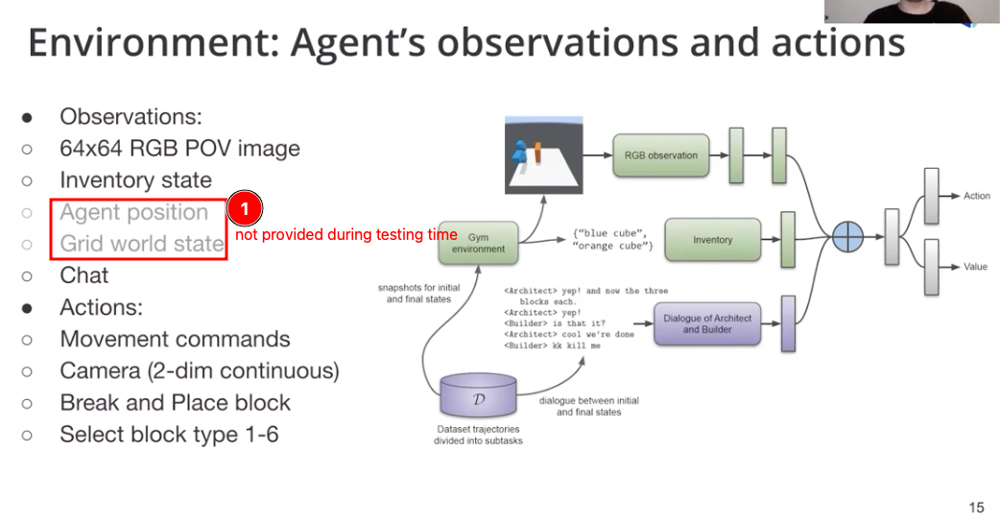
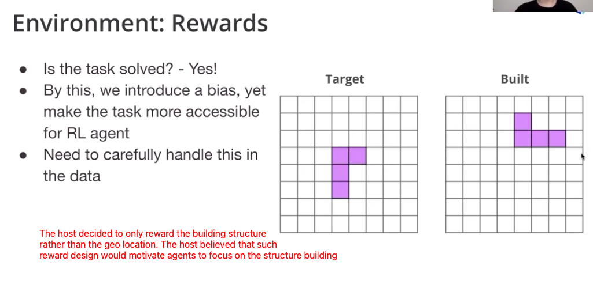
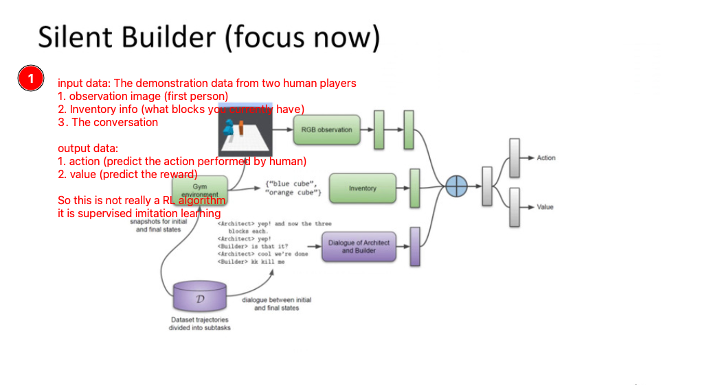
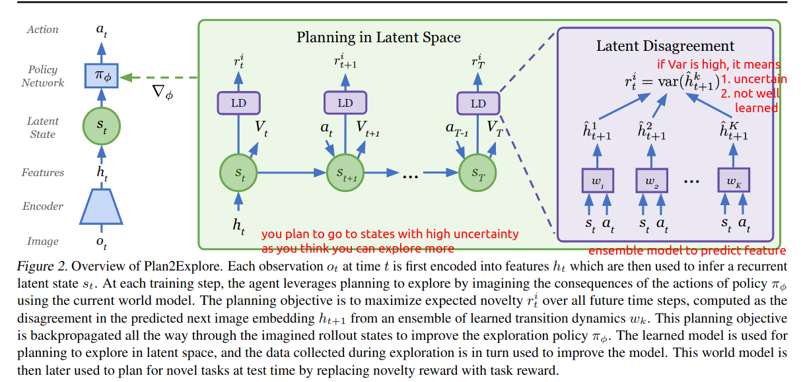
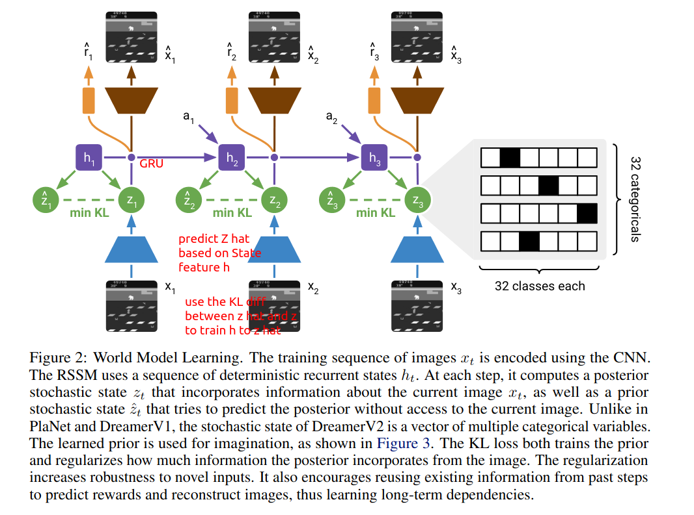

Last Week’s Work Review#
We finally decided that we should work on Interactive Grounded Language Understanding in Minecraft environment.
First of all, we should test on the baseline model provided and check the performance of existing models.
Notice that the NeurIPS Minecraft competition workshop will start at Fri Dec 10 06:45 AM -- 07:05 AM (AEDT)
We should follow up on the competition model when they are available.
You need password to access to the content, go to Slack *#phdsukai to find more.
Part of this article is encrypted with password:
[TOC]
TODO List#
- IGLU baseline model testing
- Watch IGLU workshop video
- analyse the code
-
evaluate the performance of baseline builder model(failed)
- Watch NeurIPS virtual conference
- Monday Tutorials
- DeepMind: NeurlSymbolic VQA and Structure Prior
- Paper recommendation about VQA: Learning to compose neural networks for question answering
- Paper recommendation about VQA: Learning by Abstraction: The neural state machine
- Paper recommendation: On the binding problem in Artificial Neural Networks
- The Art of Gaussian Processes
- OpenAI Self supervised learning
- DeepMind: NeurlSymbolic VQA and Structure Prior
- Tuesday Oral Session
- The Consequences of Massive Scaling in Machine Learning
- Oral session
- IGLU comptition workshop and discussion ( Start at Friday morning 5 am)
- Monday Tutorials
IGLU baseline model testing#
Environment:
- Ubuntu 21.10
- AMD Ryzen 5800x, 8-core
- RTX 3090
Strange Docker bug#
Date: Sun 5 Dec
Although the author suggested about using docker to run the model, my PC cannot install nvidia-docker and thus eventually I decided not using docker. Instead, I download all the dependencies stated in the Dockerfile.
Update:
The requirement for this model is TF=2.4, but RTX3090 is supported since TF2.5+. Maybe it is the reason
Update 2:
Nvidia-docker cannot work on Ubuntu 21.10 due to lack of cgroupv2 support
The engineers said maybe they will add cgroupv2 support before Christmas.
Anyway I should go for Ubuntu LTS rather than 21.10
Check https://github.com/NVIDIA/nvidia-docker/issues/1447
Other strange bugs#
Date: Mon 6 Dec
- The Warm-up dataset is broken (2019 version) (32GB) using OS built-in zip extractor (both Win11 and Ubuntu). In the end I found that 7-Zip app can extract it without crashing.
- I found out that all the programs downloaded from github cannot run. However, the docker version apps from docker hub can run. So maybe they modified the code after publishing and made some bugs.
- Anyway I don’t need to go deep into the engineering details. I shall use docker version apps from now on.
Successfully running the builder baseline model#
Date: Tue 7 Dec
I successfully setup the environment and run the builder baseline model using docker.
- The log information is not very clear to me.
- Also I cannot really evaluate the performance based on the terminal logs.
Evaluation of the performance of baseline model#
Recall Silent Builder task
- to build target structure given human instructions
- builder is able to navigate, place and break blocks
- collect the dataset of architect-builder interaction to use as demonstration for RL agent
Environment


Due to some unknown reason, I cannot run the baseline model on my machine, it seems like the CUDA version in the provided docker container does not match with my RTX 3090 GPU….
solution: try to modify the dockerfile (next week), I have already submited a issue post on github.
So, I tried to understand what their baseline model is doing by looking at their slides

Besides the slides, I tried to understand what the model is doing by looking at the codes
Code analysis (based on DreamerV2 baseline model)#
Date: Thu 9 Dec
expl.py#
This part contains the codes for training a Exploration Module
World Model
is the module from DreamerV2 model that predict the future world state based on only the current input observation
- the prediction of the future world state will be influenced by the demonstrations or experiences the model received during training time.
- the demonstrations from human player would always leads to states with high rewards
- the experiences generated by random action would lead to bad states
It contains 3 classes
- Random
- An actor that randomly select actions
- Plan2Explore
- check paper Planning to Explore via Self-Supervised World Models
- Planning in the latent space and explore the novel states

- So, in the DreamerV2, they use this module to let the agent explore the world.
- in the original environment, they allow the agent to have time to explore before do the real task, but this exploration time is set to 0 in IGLU challenge.
- ModelLoss
- Looks like a baseline model
agent.py#
The core part, this part is hard to understand because they do not write comments.
Also the work is based on the RSSM Recurrent state-space model and lots of details are hidden in utils.py file
it has
-
WorldModel
-

-
The codes is mainly inherited from RSSM model (Recurrent state-space model). Check this paper for more detail
-
the World model measures the loss by
-
‘observe’ -> latent state z obtained from ‘image’, given action a, obtain next z hat and next z
-
1self.rssm.observe(embed, data['action'], state=None) -
measure the KL distance between z hat and next z
- this trains the world model to predict the next state
-
-
-
After trained, ‘imagine’ -> given policy (Actor module) and starting state, predict the successive state, successive state’s feature embedding h and possible action a.
- Actor produce action based on the Feature embedding h obtained from latent state z
-
-
ActorCritic
- a normal Actor Critic model
- the Critic has a target network that update slowly so as to form stable signal to the Actor
train.py#
This is the codes that link the agent with the environment and all other hyperparameters setting regarding to the training of the model.
I will focus on this next week
It seems like the baseline model is very basic and does not even use **text information
What to do next#
- be familiar with the environment https://iglu-contest.github.io/
- look at his summer school video and its live coding session and all of its workshops videos
- check their champion model on Friday
- Figure out the bugs so that we can run the code…
Some thoughts about the model design#
Since they would use Imitation learning to pretrain the RL model.
So eventually this become a supervised learning question.
Why not utilise the tricks in SOTA VQA models and see if they can be adjusted so as to fit the RL environment.
I think what the Imitation learning is doing is just about
- Feeding the model with conversation information and visual information
- and predicting the action from the player as well as the reward from the environment.
- So this is just like VQA.
Let’s see what the champion model did. Since the NeurIPS workshop start at 5 am on Friday 9 Dec 2021, I will put those detail in the next week’s report.
Paper Reading Notes#
-
Deep Reinforcement Learning at the Edge of the Statistical Precipice
- Author: Rishabh Agarwal et. al.
- Publish Year: NeurIPS 2021
- Review Date: 3 Dec 2021
-
On the Expressivity of Markov Reward
- Author: David Abel et. al.
- Publish Year: NeurIPS 2021
- Review Date: 5 Dec 2021